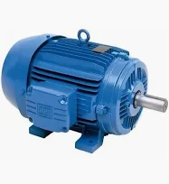
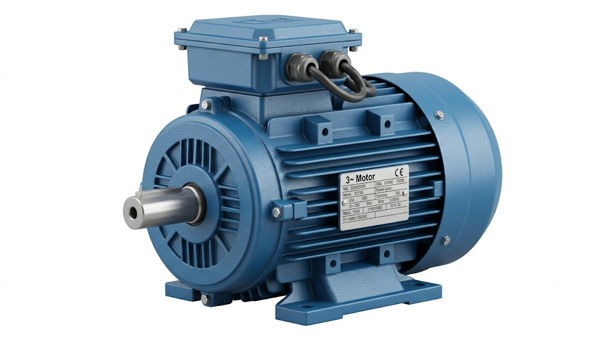
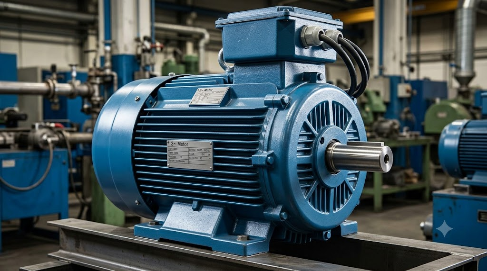

Motor Elétrico Trifásico
Máquina que transforma energia elétrica em energia mecânica por meio de corrente alternada (CA).
Conceito e Aplicação
O motor elétrico trifásico é um equipamento responsável por transformar energia elétrica trifásica em energia mecânica, sendo amplamente utilizado em aplicações industriais. É utilizado em máquinas industriais, bombas, compressores e sistemas automatizados.
- Acionamento de bombas e compressores industriais;
- Movimentação de esteiras e sistemas de transporte;
- Utilizado em máquinas CNC e centros de usinagem;
- Aplicado em ventilação, refrigeração e sistemas HVAC.
Informações Complementares

Funcionamento
Converte energia elétrica trifásica em movimento mecânico por meio de campos magnéticos rotativos.

Aplicações
Aplicado em máquinas industriais, bombas, compressores e sistemas de automação.

Vantagens
Oferece alto desempenho, eficiência energética e baixa manutenção em aplicações industriais exigentes.
Empresas
A WEG, a Siemens e a ABB são algumas das principais fabricantes de motores elétricos trifásicos utilizados em máquinas, sistemas automatizados e processos industriais.
: Empresa brasileira líder na fabricação de motores elétricos, reconhecida internacionalmente por eficiência e confiabilidade.
: Multinacional alemã com linha SIMOTICS de motores trifásicos de alto desempenho para todas as aplicações industriais.
: Líder global em motores de alta eficiência, com soluções de acionamento e controle integradas para automação industrial.